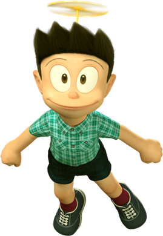
- Name: Suneo Honekawa
- Age: 10
- Birht Date: 29 February, 1961
- Height: 135 cm
- Weight: 20 kg
- Skin Colour: Peach
- Eye Colour: Black
- Favorite Colour: Green
- Parents: Mr. Honekawa, Mrs. Honekawa
Suneo Honekawa is one of the main characters of the Doraemon franchise.
He's aligned as a
protagonist at best and semi-secondary antagonist at worst. He is a spoiled rich kid who
likes to show off his cool stuff to his friends and make them jealous. The friends he
hangs out with mostly are Nobita, Doraemon, Gian and Shizuka. He sometimes brags to his
friends to things like meeting up with famous stars.
He gets around ₹3000 (¥5000, US$40) in monthly pocket money and buys cool toys and
comic books, but he never lets Nobita touch his comics and cool toys, which provokes his
anger and jealousy. He usually hangs out with Gian to think he is the coolest kid in the
world like Gian and often bullies, irritates and/or beats up Nobita with Gian.
Sometimes, he lies to Gian in order to please him and avoid falling victim to his
beatings. He is also a member of the Giants baseball team. He is not very good in
baseball, but he occasionally scores home runs.
Appearance
Suneo has realistic black hair pointing towards the front and wears a teal shirt and dark brown shorts. In Stand by Me Doraemon, Suneo has afro hair when he is an adult.

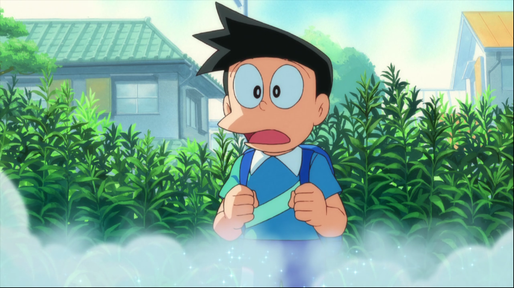
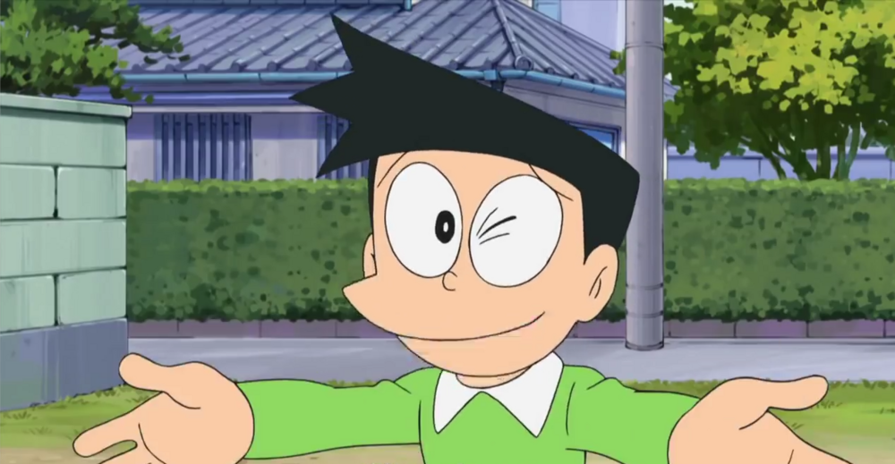
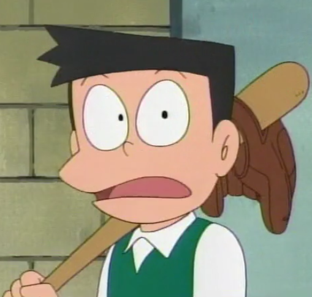
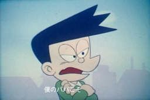
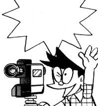
Personality and Characteristics
Suneo's personality is described as a cunning, prideful, cocky, arrogant, and narcissistic, as he always brags about unusual (and expensive) stuff including toys, comics, etc, he often brags about his dad's position as a president director of a company and holds a deep respect towards him (he wants to be the successor of the company). His highest and most "easy-to-see" personality is narcissism, in which often he likes to look in the mirror and talk about how handsome he is (like the queen in Snow White). Some of the stories start with Suneo showing off some new video game or toy which evokes Nobita's envy and irritation. He has extensive knowledge of science and is a talented artist and designer.
He has the habit of inviting Gian and Shizuka to see something or go somewhere but always leaves Nobita out with one excuse or another. When he did invite Nobita to go somewhere, it was only to scare Nobita or because Shizuka got so fed up that she refuses to go with him unless Nobita gets invited. He is also cunning and has a way with words, that even Gian is always pleased by his "praise" in singing and taking adults' hearts by praising them. However, despite his arrogant personality, he has a deep side which is a caring, kind, sensitive, supportive, and regretful side. It is shown in many episodes that deep down, he actually feels sorry for Nobita when Gian is beating him up.
He is still a bed-wetter so he sleeps in the bathroom. He considers this humiliating habit as a major weakness in his composure. Suneo is also very self-conscious about his height, being the shortest kid in his class. His personality when he is in trouble or his friend's life is in danger however, is quite different and he is a lot braver and is ready to help his friends. He's the only one in the group who acts insane during a situation, showing more of his psychotic/insane side.
Suneo is a video game pro, as an arch-rival to Nobita Suneo always tries to be a better gamer than him, but constantly fails. His favorite video games would mostly be RPGs and shooters such The Story of Zelia (a spoof of The Legend of Zelda), Last Legend (a spoof of Final Fantasy) and TERROR (a spoof of DOOM).
Suneo is proven to be very careless of the environment when he tried to dump garbage into the ocean much to Doraemon's rage and passion for nature. He is also quite cruel towards animals. For instance, he purposely teased one of the macaques that resemble Nobita by offering it a banana but then swipes it away from the monkey. He even once attempted to catch a rabbit that Nobita first found along with Gian.
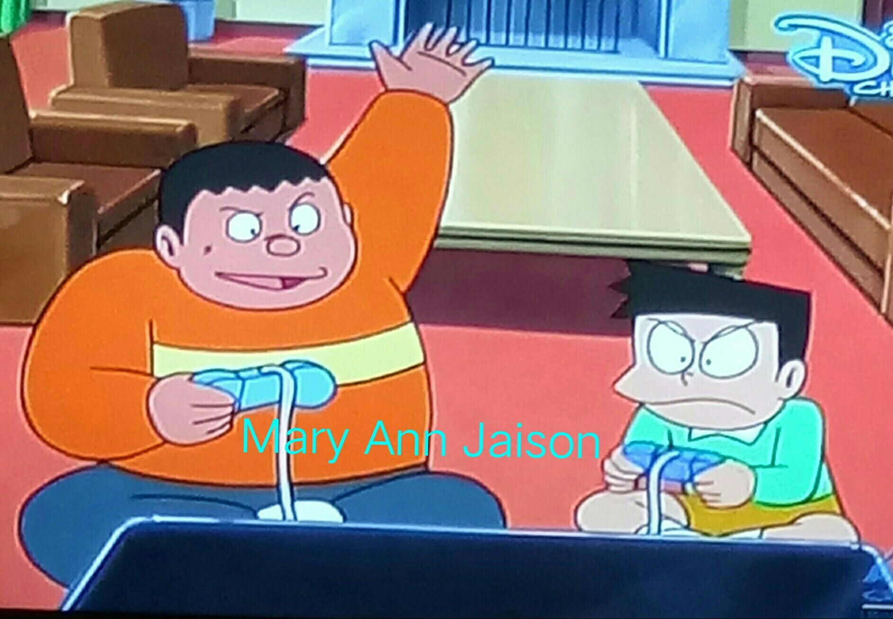
Whenever he is in so much pain or have been greatly humiliated, he usually cries for his mother.
Family
Suneo's mother gives him things without considering whether or not it's good for him.
Suneo's father isn't described in great detail, but it is mentioned that he has friends who
are comic writers, movie directors, etc., and that he's a very successful businessman in his
life.
He has a younger brother, Sunetsugu, who lives in New York with Suneo's uncle. He respects
him a lot, but only because of his lies and bragging.
Suneo's grandmother uses old wives' stories to impart values and good habits to Suneo.
He also has a cousin called Sunekichi who has a lot of cool stuff like rare cars, and who
can make remote controlled toys. Suneo often brags about Sunekichi's wealth and sometimes
uses his items to show off.
Relationships
Doraemon
"Doraemon! Please help us!"
— Suneo calling out for Doraemon in Doraemon: Nobita and the Island of Miracles
Doraemon and Suneo are good friends. He also cares for him like he does for Shizuka, Nobita, and Gian and tries to keep them out of danger. Doraemon is one of the few who does not get bothered by Suneo's boasting but instead takes out an even cooler gadget to show Suneo. Suneo used to be jealous of Nobita because he has a cool robot cat (I, Honekawa Doraemon) but it is shown now that he is pretty happy with his own friendship with Doraemon, and does not envy Nobita as much anymore. In an episode, after winning a race car match, he says that he needs Doraemon as the prize, however, it resulted as cheating and another episode in which to show the talents he doesn't have, he uses a Doraemon's gadget to make the opposites of it.
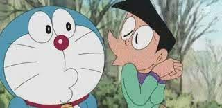
Nobita Nobi
"Here, you can read my comic! I'll get some snacks for you!"
— Suneo to Nobita after Nobita rescued him from being beaten up by Gian.
Suneo is both Nobita's arch-rival and friend. Whenever Suneo flaunts his material wealth with everyone, Nobita's jealousy is very easily provoked. He is often seen with Gian being forced to bully Nobita, though deep down he sometimes actually feels sorry for him. He has a habit of inviting Gian and Shizuka to something or someplace, but almost always excludes Nobita with a weak excuse. (A common excuse being "There is only place for three people" or he directly insults Nobita to make him very miserable). He is shown to be quite sadistic when it comes to ruining Nobita's good mood with or without Gian around. He seems to enjoy destroying Nobita's self-esteem and smile. Suneo sometimes blames Nobita for every bad deed Gian comes to know about, like drawing Gian on the school board. Despite their height difference, Suneo considers himself tougher and way better than Nobita in every way, which makes him quite intimidating to Nobita even without Gian around. Even Suneo would betray Nobita by pinning his misdemeanors on him in order to avoid possible punishment and Gian's violent confrontations. Nobita almost always gets back at him for said events with one of Doraemon's gadgets. He'd even steal them from him either because Nobita's tendency of showing them off to him or simply he wanted them for his own selfish purposes. On the other side of this, they are shown to be laughing and joking together in some scenes, and they sometimes gang up on Gian (possibly as revenge for Suneo's forced affiliation with Gian, and Nobita's constant beatings). Nobita and Suneo are seen as good friends when they are not arguing and conflicting with each other.

Shizuka Minamoto
"Suneo-san, you're an amazing artist!"
— Shizuka commenting on Suneo's drawing.
Suneo and Shizuka are good friends. He invites Shizuka, Nobita, Gian, and sometimes Doraemon to his house and tries to ask them to come with him at trip (in which Nobita rarely gets a chance to come with them). The only time Shizuka threatened to reject Suneo's invitation to one of his luxurious trips was when Suneo purposely excluded Nobita one too many times to which Suneo was forced to invite Nobita in order for Shizuka to come. Shizuka also apparently admires Suneo's drawing talent, as shown in some episodes, and Suneo equally admires her cooking talent like many other people.
Suneo & Shizuka sometimes argue during their adventures. One of their arguments is that Suneo tells them to give up the dinosaur Piisuke while Shizuka disagrees and they both end up arguing for minutes (Nobita's Dinosaur 2006).
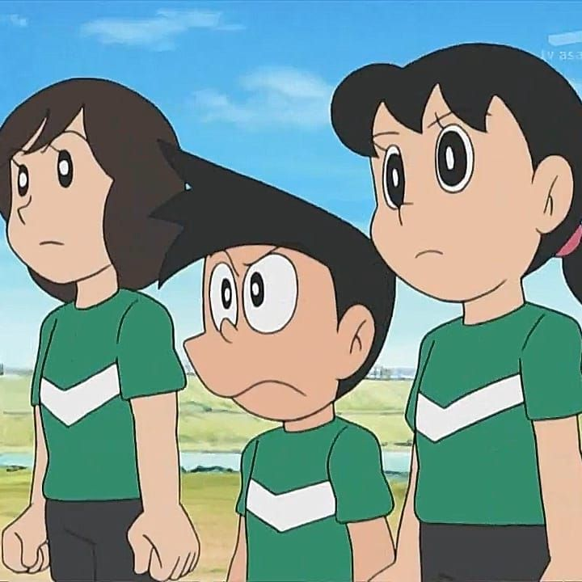
Gian
"Of course I'll let you see my homework! We're good friends, right?"
— Suneo to Gian after Gian asked if he could see his homework in Nobita's Dinosaur.
Gian and Suneo are shown to be really good friends, but occasionally Gian will beat him up and Suneo sometimes says that he dislikes Gian. In one episode, Suneo commented that Gian thinks that Suneo and Nobita are objects to hit, not friends. That remark left Doraemon laughing but Nobita seemed to agree to that. Gian is often seen with Suneo, but Suneo sometimes only acts with Gian to keep him happy. Whenever Suneo does or says something that angers Gian, Suneo would lie to him that Nobita is responsible for all of his misdemeanors in order to avoid getting beaten up by Gian. Sometimes Gian comes to Suneo's house to study but ends up eating all his food, much to Suneo's dismay. When it comes to getting his hands on Doraemon's gadgets, including anti-anger types, Suneo would take full advantage by insulting Gian and then use the gadgets to avoid getting beaten up by him. For example, Suneo used the Now-Now Stick to keep Gian's anger in check but ended up failing in the end.
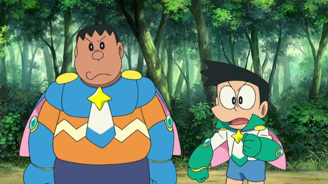
Gallery
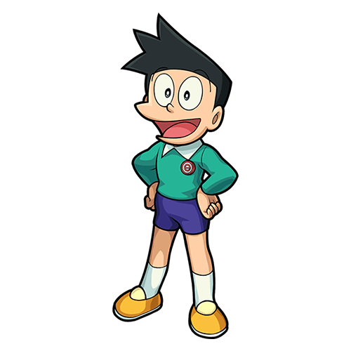
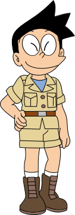
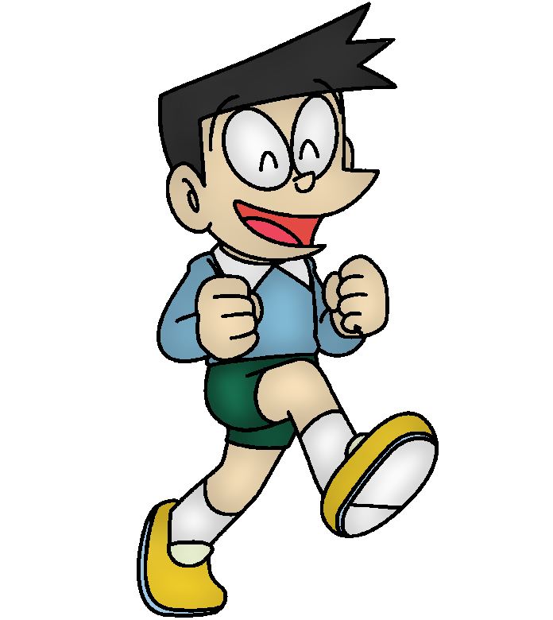
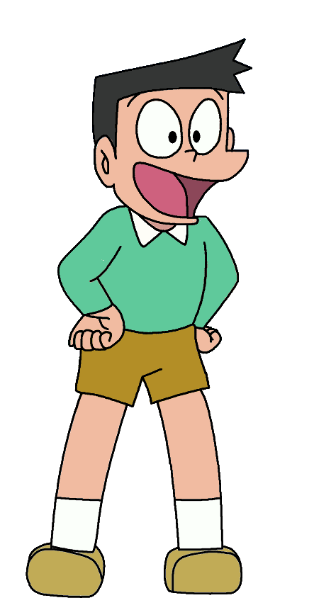
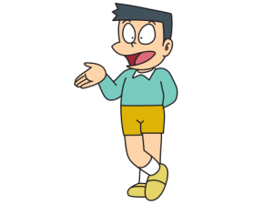
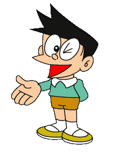